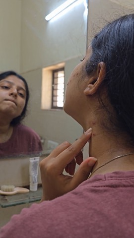

If a video shows no picture in Safari, please open this page in Chrome.
At Kinetic Age, I made AI video ads every few days. I've been the user UAgenius is built for. I know the problems because I hit them myself, ad after ad.
Counted from my Kinetic Age project folders: weight loss, obesity, PCOD, diabetes, fatty liver, nutrition, and back, knee and neck pain physio.
For every finished ad there were many bad clips. These are three of them.

| What I faced | What UAgenius does |
|---|---|
| Re-entering the brand, fonts and logo for every new ad | Saves the brand once and reuses it |
| Keeping the same person across shots. One PCOD scene took 14 takes | Saved characters and strict character rules for every shot |
| Many rounds of edits. The PCOD ad went through 6 rough cuts | The reviewer checks each clip before I see it, so fewer rounds reach me |
| Clips that looked wrong: mirrors, phones, hands | The reviewer checks every still and clip against a checklist |